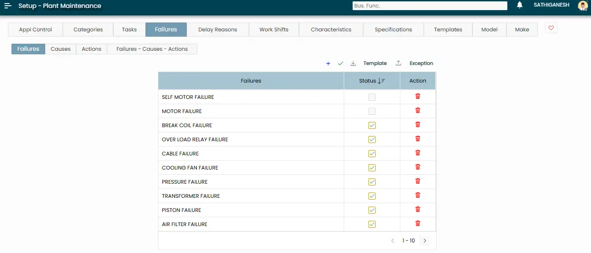

<div data-category="Plant Maintenance" data-title="Failures" data-updated="January 27, 2026" data-contributors="RoadmapIT" data-breadcrumb="Home,Plant Maintenance,Failures">
  <div class="page-content">
    <p>Equipment failure is a term that describes any situation where a piece of equipment does not work as intended or expected. It can mean that the equipment stops working completely, works partially, or works poorly.</p>
    <p>The Equipment's failure & Description are defined in this screen. The failure cannot be modified or deleted when there exist child records, but the descriptions can be modified.</p>
    <h5>Navigation path:</h5>
    <p class="fs-6">Plant Maintenance \ Setup \ Setup-Plant Maintenance \ Failures \ Failures</p>
    
    <ul style="list-style-type: none; align-content: center">
      <li class="mouse-icon">
        Click to
        <i class="bi bi-plus fs-4 mx-2 text-primary"></i>
        Add.
      </li>
      <li class="mouse-icon">Enter the Failure Description</li>
      <li class="mouse-icon">
        Click on
        <i class="bi bi-check-lg fs-4 mx-1 text-success"></i>
        button to save
      </li>
    </ul>
  </div>
</div>